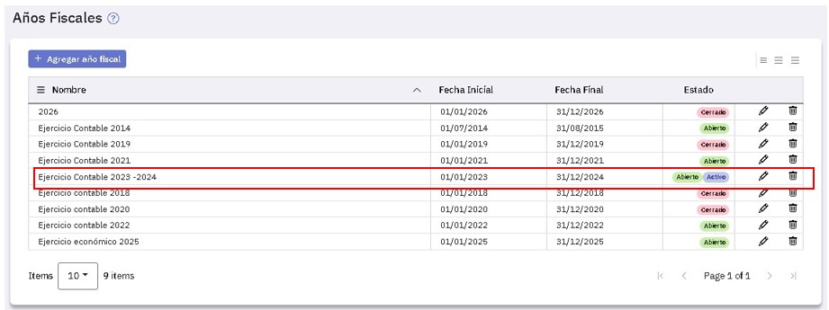
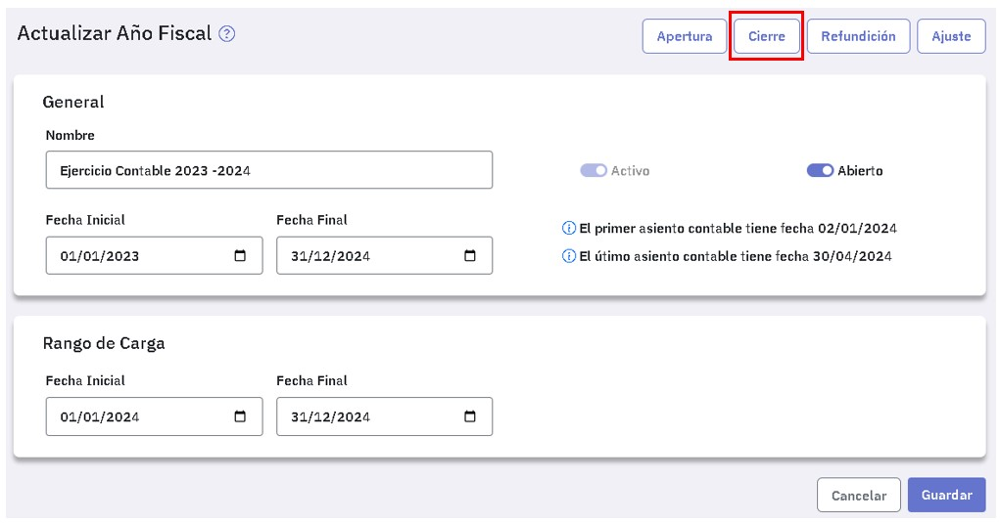

Asientos de cierre (en proceso de documentación)
Los asientos de cierre correspondientes a un año fiscal se generan en forma automática, dicho año fiscal tiene que estar abierto y activo. No obstante, también pueden registrarse en forma manual, desde el menú "Asientos", indicando en el campo "Tipo", "Cierre".
Lo habitual es generarlos en forma automática, eventualmente, luego podrás modificarlos desde el menú "Asientos".
Podés generar uno o varios asientos de cierre incluyendo cuentas de resultado y cuentas patrimoniales.
Para elegir las cuentas a incluir en un asiento de cierre podés elegirlas mediante un atributo (por ejemplo: “Resultado”, “Patrimoniales”), o bien tenés la opción de seleccionar todas las cuentas que hayan tenido movimientos en el período.
Si seleccionás las cuentas por atributo tenés que indicar también una cuenta de refundición deudora y otra acreedora.
En base a la elección realizada, el sistema te muestra un texto en el campo "Observación" que podrás modificar libremente, por ejemplo:
- Asiento de cierre de todas las cuentas
-
Asiento de cierre de las cuentas con atributo: (el que hayas indicado)
Si incluís todas las cuentas en el asiento que se genera, las que presenten saldo deudor aparecen con su saldo al haber y las que presenten saldo acreedor con su saldo al debe. Como resultado, el saldo de todas las cuentas quedará en cero.
Si indicás un atributo, en el asiento que se genera la cuenta de refundición acreedora se acredita con los saldos de las cuentas de saldo acreedor y la cuenta de refundición deudora se debita con los saldos de las cuentas de saldo deudor. Como consecuencia, las cuentas seleccionadas quedan con saldo cero.
Cualquiera sea la opción, el asiento generado queda indicado como de tipo "Cierre". Esto posibilita que al emitir un balance puedas indicar si dicho asiento se incluye o no, también será de utilidad al generar asientos de apertura.
Para generar el asiento de cierre tenés que ingresar al punto "Año fiscal", asegurarte que el ejercicio económico esté activo y abierto y luego editarlo:

A continuación presioná el botón .

A partir de acá esperar que salga el issue!!!!!!!!!!!!.
Completá los datos de la pantalla que se abre a la derecha:

Los datos a completar son:
-
La fecha del asiento: te muestra la fecha actual, la fecha que ingreses debe estar dentro del rango de carga.
-
El número de asiento: te muestra el siguiente numero disponible y podés modificarlo.
-
Si es necesario, ingresá una observación.
Una vez que completaste los datos, presioná el botón "Generar" y verás un mensaje de confirmación. Desde allí disponés de un enlace para consultar el asiento generado.
Si antes de cerrar el ejercicio necesitas trabajar en el siguiente consultá Como trabajar en un ejercicio sin cerrar el anterior.